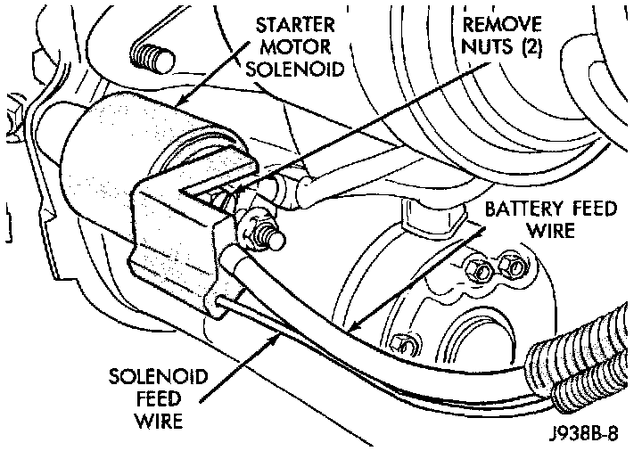
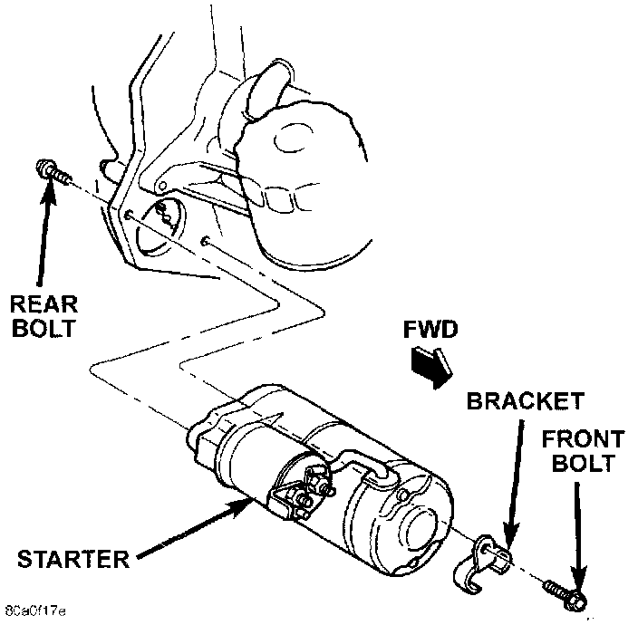

Starter Motor: Service and Repair
REMOVAL1. Disconnect and isolate the battery negative cable.
2. Raise and support the vehicle.
Starter Wire Harness Remove/Install - Typical:

3. Remove the battery cable and wire harness connection from the starter solenoid.
Starter Removal/Install:

4. Remove the front starter mounting bolt and the automatic transmission oil cooler line bracket.
5. Remove the rear starter mounting bolt and lower the starter.
6. Reverse the removal procedures to install. Tighten the starter hardware as follows:
- Upper mounting bolt - 55 N.m (40 ft. lbs.)
- Lower mounting bolt - 41 N.m (30 ft. lbs.)
- Battery cable terminal nut - 10 N.m (90 in. lbs.)
- Solenoid wire harness terminal nut 6 N.m (55 in. lbs.).